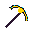
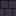

Ancient myths.
Modern industry.
From your first Volcanite ingot to an Olympian-scale factory. Discover the materials, machines and living systems in this Minecraft 1.21 Fabric mod.
VOLCANIC POWER. MYTHIC POSSIBILITIES.
Find your next invention.
Choose a system, find an item and see how to craft or obtain it.
Materials & Components
Metals, dusts and alloys. The foundations of your workshop.
Explore categoryMachines & Generators
Turn raw resources into an automated production line.
Explore categoryPipes & Wires
Move items, fluids and energy. Connect every part of your factory.
Explore categoryStorage & Items
Build your storage network with chests, disks and upgrades.
Explore categoryBotany & Manuals
Grow living ore trees, discover hybrids and cultivate resources.
Explore categoryEnergy & Upgrades
Store power, link pylons and fine-tune your machines.
Explore category
Equipment & Exploration
Forge tools and armor, discover mythic equipment and explore your world.
Explore category
Building Blocks
Shape your workshop with living-tree wood, metal blocks, glass and volcanic cement.
Explore categoryMythology & Rituals
Divine scrolls, ritual structures and Stygian recovery.
Explore category →Fluids & Utilities
Fluid containers, fuels, processing products and teleportation.
Explore category →408 core items across 10 categories. Crafting stations and non-crafting acquisition routes are documented separately.
Start small. Build outward.
Three useful places to begin, at your own pace.
- 01
Gather your foundations
Explore Volcanite, materials and the first component recipes.
Browse materials → - 02
Set up your worktable
Check the crafting station label. Some recipes require the Volcanite Worktable.
Build a Worktable → - 03
Connect your workshop
Choose your machines, supply power and route items or fluids.
Explore logistics →
A little guidance.
A bigger workshop.
Practical guides for the systems that need more than a crafting table.
One block is
just the beginning.
Build nine multiblock structures with illustrated layers, component lists and clear formation steps.
Explore multiblocks → BOTANY FIELD MANUALGrow something
extraordinary.
Learn grafting, discover living-tree hybrids and bring botanical production into your factory.
Read the botany manual →Your workshop awaits.
Install Obsidium and Fabric API in a Minecraft 1.21 Fabric instance, then start with Materials & Components.
Before you dive in.
What do I need to play?
Minecraft Java Edition 1.21, Java 21, Fabric Loader and Fabric API. Install Obsidium on both the client and server when playing multiplayer.
Why does the vanilla crafting table show no result?
Some Obsidium recipes require a Volcanite Worktable. Check the station label above each recipe in the catalog.
Find the Worktable recipe →How do I read a multiblock layout?
Each square is one block. Read each layer from above and build from bottom to top; follow the controller orientation shown in the guide.
Open the construction guide →